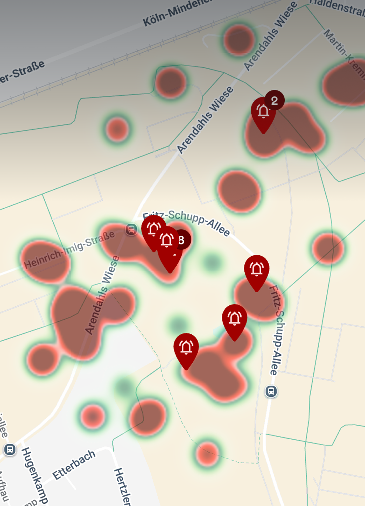

0
der Frauen fühlen sich im ÖPNV nachts unsicher
0
haben den ÖPNV bewusst gemieden
0
haben Events wegen unsicherer Heimwege nicht besucht
0
der Vorfälle werden gemeldet
Pionier werden
Millionen Menschen nutzen täglich Busse und Bahnen – doch Belästigung, Vandalismus und Unsicherheit werden selten gemeldet. saferspaces schafft einen digitalen Meldekanal, der überall dort funktioniert, wo Fahrgäste unterwegs sind.
„Sicherheit ist eine Voraussetzung für Gleichberechtigung im öffentlichen Raum."
48 % der Frauen fühlen sich im ÖPNV nachts unsicher
71 % haben den ÖPNV bewusst gemieden · 41 % haben Veranstaltungen wegen unsicherer Heimwege nicht besucht
Herausforderungen
Hunderte Haltestellen, Dutzende Linien, Tausende Fahrgäste – im ÖPNV fehlt es bisher an niedrigschwelligen Meldewegen.
Hunderte Haltestellen, Dutzende Linien – saferspaces macht jede Location per QR-Code erreichbar.
Viele Fahrgäste scheuen den direkten Kontakt. Anonyme, digitale Meldungen senken die Hürde drastisch.
Automatische Mehrsprachigkeit – jede Meldung öffnet sich in der Gerätesprache der Fahrgäste.
Heatmaps und Statistiken zeigen, wo Handlungsbedarf besteht – für bessere Routen und sicherere Haltestellen.
Mehrwerte
QR-Code scannen, Meldung abschicken. Keine App nötig – maximale Nutzung durch minimale Hürden.
Keine personenbezogenen Daten, keine Standortdaten. Datenschutz ist technisch sichergestellt – nicht nur versprochen.
Öffnet sich in der Gerätesprache. 30+ Sprachen – ideal für die diverse Fahrgastschaft im ÖPNV.
An Haltestellen, in Fahrzeugen, auf Fahrplänen, an Fahrkartenautomaten – beliebig skalierbar.
Meldungen automatisch der richtigen Linie oder Haltestelle zuordnen. Hotspots erkennen, Maßnahmen ableiten.
Fertige Reports mit Grafiken, Vorfallsdynamiken und Auswertungen – für Geschäftsführung und Aufsichtsgremien.

Rapid Report
An Haltestellen gibt es kein Awareness-Team. Mit Rapid Report können Fahrgäste Vorfälle trotzdem jederzeit melden – anonym, digital und ohne Zeitdruck. So entsteht erstmals eine belastbare Datenbasis für die ÖPNV-Planung.

Prävention durch Daten
Jede Meldung liefert strukturierte Daten – anonymisiert, kategorisiert und georeferenziert. Das Analyse Dashboard macht Muster sichtbar, die im Alltag verborgen bleiben: Welche Linien sind betroffen? Zu welchen Uhrzeiten häufen sich Vorfälle? Wo entstehen Angsträume?
Einsatzszenarien
saferspaces ergänzt bestehende Sicherheitsstrukturen im ÖPNV – digital, barrierefrei und flächendeckend.
QR-Codes in Bussen und Bahnen – Fahrgäste melden Vorfälle direkt während der Fahrt, ohne Personal anzusprechen.
QR-Codes an Wartehäuschen und Bahnsteigen – Meldewege auch außerhalb der Fahrzeuge, rund um die Uhr.
Gerade nachts ist die Hemmschwelle hoch und das Sicherheitsgefühl niedrig – anonyme Meldungen helfen.
Fußball, Konzerte, Stadtfeste – bei erhöhtem Fahrgastaufkommen steigt auch der Bedarf an Meldestrukturen.


In einer persönlichen Demo zeigen wir euch, wie saferspaces im ÖPNV funktioniert – an jeder Haltestelle, in jedem Fahrzeug.